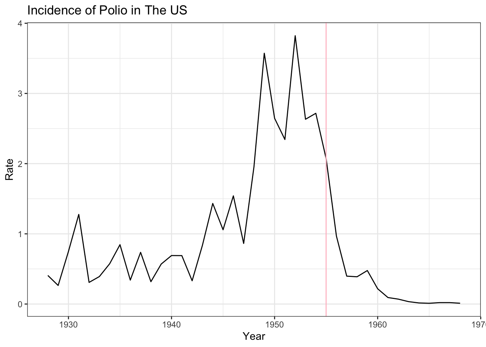

PSET_2
The Importance of Vaccines in Public Health
Vaccines play a crucial role in public health by preventing the spread of infectious diseases and protecting individuals from potentially life-threatening illnesses. They are a cornerstone in the effort to maintain overall community well-being and safety. In recent years, there has been an unfortunate resurgence of misinformation surrounding vaccines, particularly concerning their alleged link to autism. This article aims to dispel these unfounded claims by presenting robust evidence demonstrating the efficacy of vaccines in preventing diseases and establishing the absence of any credible link to autism.
Historical Evidence: Diseases Eradicated by Vaccines
Vaccines have contributed to the near-eradication of many deadly diseases. Diseases like smallpox and polio, which once wreaked havoc on communities, are now rare due to widespread vaccination programs. To illustrate this point, let’s examine the decline in cases of measles, mumps, and rubella (MMR) following the introduction of the MMR vaccine.
As the heatmap clearly indicates, the incidence of measles in the US dropped significantly after the introduction of the MMR vaccine in 1963.
Let us also look at the cases of smallpox and polio in the following graphs after their vaccines were introduced.

Thanks to the success of vaccination, the last natural outbreak of smallpox in the US occurred in 1949. In 1980, the World Health Organisation declared smallpox eradicated, and no cases of naturally occurring smallpox have happened since.

When the polio vaccine was introduced in 1955, once again, there was a sharp decline in cases. This correlation provides powerful evidence that vaccines play a crucial role in preventing the spread of infectious diseases.
The Autism Myth Debunked
One of the most persistent and damaging myths surrounding vaccines is the alleged link to autism. The Lancet study conducted by Wakefield et al. in 1988 was actually retracted due to ethical concerns and serious methodological flaws. Numerous subsequent studies, conducted with rigorous methodologies and larger sample sizes, have failed to replicate Wakefield’s findings. A notable meta-analysis, published in the journal Vaccine (Taylor et al., 2014), examined the results of multiple case-control and cohort studies investigating the potential association between vaccines and autism. The authors concluded that there is no credible evidence supporting a link between vaccines and the development of autism. Specifically, they showed data that proves that developing autism after being vaccinated has an 80% probability of happening by chance.
Concluding Remarks
In conclusion, vaccines are a vital tool in the fight against infectious diseases, preventing widespread outbreaks and protecting individuals and communities. The evidence presented in this article, supported by graphs illustrating disease decline, should reassure the public of the importance and safety of vaccination. It is crucial to rely on accurate information and trust in the extensive research that supports the effectiveness and safety of vaccines for the greater well-being of society.